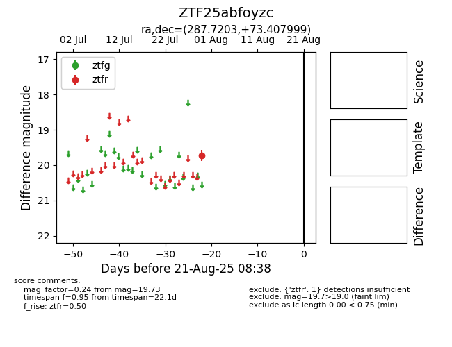

Target ZTF25abfoyzc at 2025-08-21 08:38, see:
FINK: fink-portal.org/ZTF25abfoyzc
Lasair: lasair-ztf.lsst.ac.uk/objects/ZTF25abfoyzc
ALeRCE: alerce.online/object/ZTF25abfoyzc
alt names
ZTF25abfoyzc (ztf,alerce)
coordinates:
equatorial (ra, dec) = (287.7203,+73.40800)
galactic (l, b) = (104.7038,+24.54847)
photometry
last ztfr=19.73
1 ztfr detections
